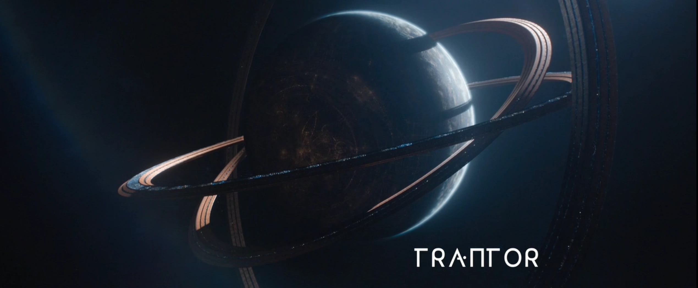

Overview
Trantor is the capital planet of the Galactic Empire in Isaac Asimov’s Foundation series. Located near the center of the galaxy, it serves as the political and administrative heart of the galaxy-wide human civilization.
Characteristics
- Entire surface covered by metal — an ecumenopolis
- Over 40 billion inhabitants
- Empire's administrative and bureaucratic hub
- Vast underground infrastructure
Significance
Trantor symbolizes the height of human achievement — and its fragility. As the empire centralized on this planet, it became vulnerable to stagnation and decay. Its fall marks the beginning of the Empire’s decline, making it a key setting in the Foundation saga.